入れ方(5分)
Chrome の拡張機能「🐒 Tampermonkey(タンパーモンキー)」の上で動きます。パソコンの Chrome で進めてください。
やることは2つだけ。Chrome ウェブストアで Tampermonkey を入れる(①②)→ このページの緑の「ダウンロード」を押して、出てきた画面で「インストール」を押す(③)。
- 🐒 Tampermonkey を入れる
Chrome ウェブストアは、Chrome に機能を足す「拡張機能」を配っている Google の公式のお店です。
Chrome ウェブストアの Tampermonkey を開く
右上の青い「Chrome に追加」→「拡張機能を追加」を押します。もう入っている人は「Chrome から削除」と出ているので、次へ。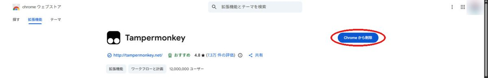
- Tampermonkey に「ユーザースクリプト」を許可する
Chrome のアドレス欄(画面の一番上の、URL が出ている所)に
chrome://extensionsと打って Enter。拡張機能の一覧で、Tampermonkey の「詳細」を押します。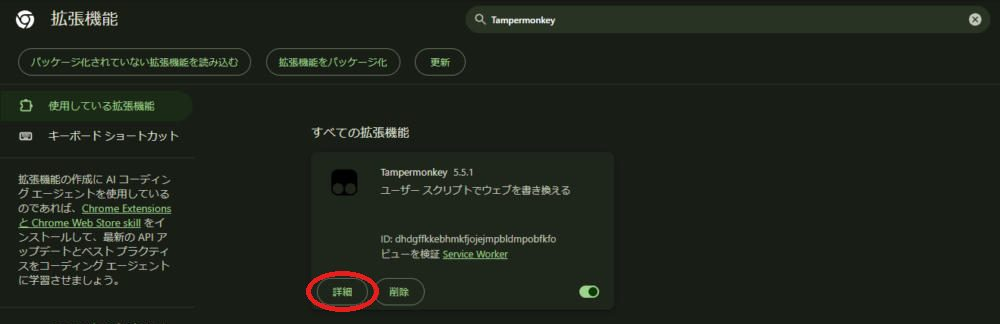
「ユーザー スクリプトを許可する」をオンにします。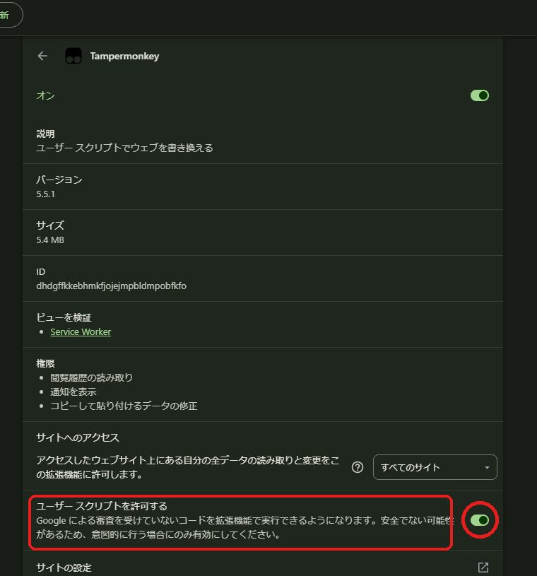
この項目が無い古い Chrome の場合は、右上の「デベロッパー モード」をオンにします。 - このツールを入れる
リベ イベント フィルターをダウンロード
🐒 Tampermonkey の「ユーザー スクリプトのインストール」の画面が開くので、左下の「インストール」を押します。右に「悪意があるスクリプトは…」と怖い注意書きが出ますが、Tampermonkey がどのスクリプトでも出す決まりの文です。「作者」が遊牧民、「INCLUDE」が libecity.com/* なら本物です。 - リベシティを開き直す
リベシティをもう一度開くか、ブラウザの更新ボタン(アドレス欄の左の ↻。キーボードなら F5)を押します。画面の右下に青い丸いボタンが出たら完了です。押すとイベントの一覧が開きます。
初めての時は一覧が空なので、一覧の下の「更新」を押してください(10〜30秒で、今月と来月の予定が入ります)。
新しい版は Tampermonkey が自動で取りに来ます。決めた条件は更新しても消えません。
始める前に
Chromeで、リベシティにログインしておきます。
- リベシティのイベントカレンダーが開ける
- 予定を入れたいGoogleアカウントに、Chrome でログインしている
- リベシティの画面の右下に、青い丸いボタンがある
丸いボタンを押すと一覧が開き、もう一度押すか右上の × で閉じます。丸いボタンも一覧も、つかんで好きな場所へ動かせます(場所は覚えます)。Tampermonkey のメニューの「📅 イベント一覧を開く・閉じる」からも開けます。左上の丸い画像を押すと、好きな画像に変えられます。
条件を決める
写真は Chrome 拡張版の画面ですが、一覧の中身は Tampermonkey 版も同じです。
赤丸＝押す・入力する場所黄色＝読むところ赤線＝確かめるところ123＝操作する順番
1. 条件を開いて、種類と期間を決める
- 1検索欄の横の青い「条件を広げる」を押す開いている間は「条件をたたむ」に変わります。
- 2見たい種類を押す（オフライン／オンライン／両方）
- 3「日付・場所・曜日」を押して広げる
- 4先の月まで見たいときは終了日を入れる
- 5「更新」で何か月分を読むかがここに出るので読む空欄なら今月と来月の2か月分。最大6か月です。
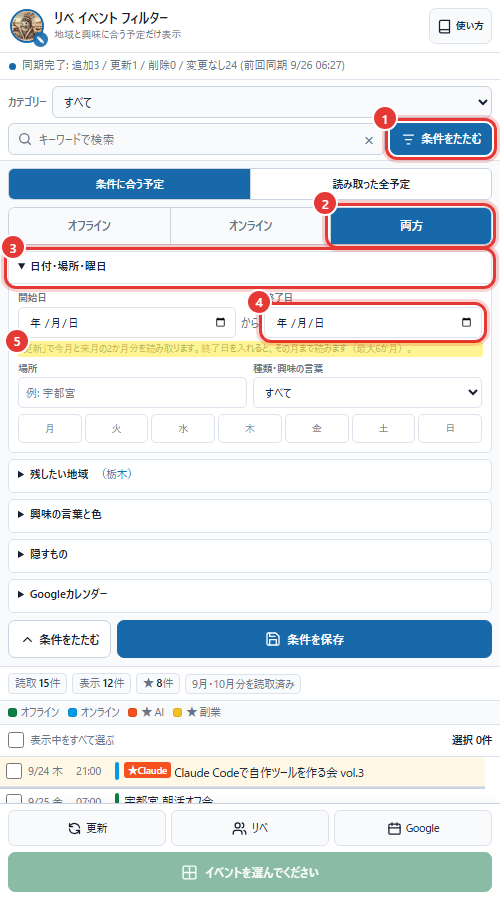
2. 残したい地域を選ぶ
- 1「残したい地域」を押して広げる
- 2都道府県の丸いボタンを押す（複数選べます。青くなれば選択中）
- 3上の欄に選んだ地域名が入ったことを確かめる
「東京」で「東京都」「東京オフィス」の両方に当たります。何も選ばなければ全国の予定が出ます。「全オフィス共通」の予定は、どの地域を選んでいても出ます。
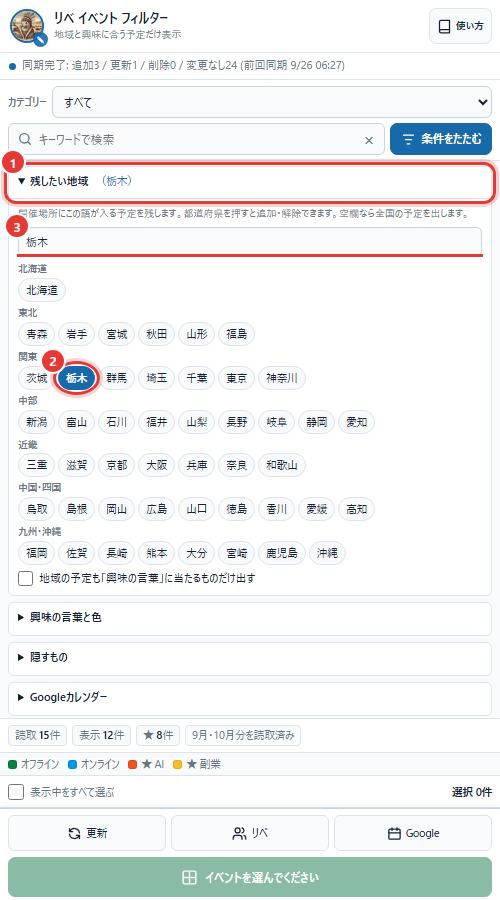
3. 興味の言葉と色を決める
- 1「興味の言葉と色」を押して広げる
- 2題名に入っていそうな言葉を入れる（例：AI, Claude, ChatGPT）カンマか改行で区切ります。大文字・小文字、全角・半角は区別しません。
- 3そのグループの色を1つ押す
- 4別のテーマを足すときは「＋ グループを追加」を押す
オンラインの予定は数が多いので、初めは「オンラインは、この言葉に当たる予定だけ出す」がオンです。見たくない題名は「隠すもの」を広げ、「除外する言葉」へ入れます。
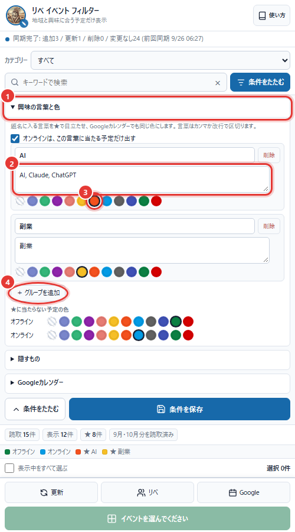
4. 条件を保存する
- 1青い「条件を保存」を押す場所・曜日・カテゴリーも含めて保存され、条件は自動で閉じます。次に開いたときも同じ条件で表示されます。
- 2保存せずに閉じたいときは「条件をたたむ」を押す
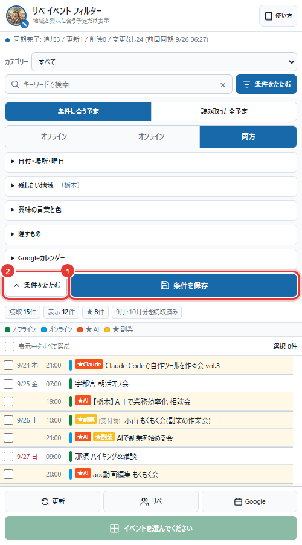
イベントを探して選ぶ
条件は1つだけでも、いくつか組み合わせても使えます。
1. 探して、チェックする
- 1カテゴリーを選ぶ（Codex・Zoom・保険の見直しなど）
- 2検索欄に言葉を入れる（例：AI）カテゴリー名を打っても、そのカテゴリーの予定が出ます。
- 3入れたい予定の左端のチェック欄を押す
- 4緑の「選んだ○件をGoogleカレンダーに入れる」を押す写真の拡張版では「〜へ追加」と書かれています。
- 5「10月・11月分を読取済み」は「更新」で読み込んだ月です表示する日付は、条件の開始日・終了日で絞れます。
- 何も指定しない項目は無視される
- 複数の条件は、すべてに合う予定だけ表示される
- 「読み取った全予定」にすると、条件の地域外も探せる
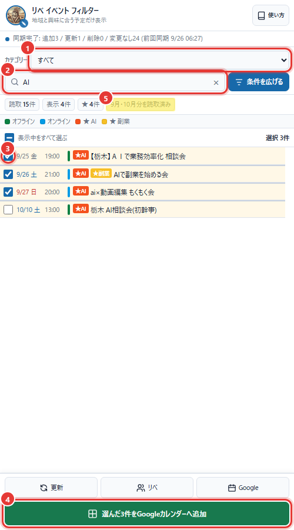
2. まとめて選ぶ・最新にする
- 1予定ごとにチェック欄を押して選ぶ
- 2見えている予定を全部選ぶときは「表示中をすべて選ぶ」を押す
- 3右上の「選択 ○件」で、選んだ数を確かめる
- 4一覧を最新にしたいときは「更新」を押す条件の終了日の月まで、リベシティを裏で読み直します。リベシティのイベントカレンダーを開いている時は、開くだけで今見ている月が一覧に入ります。
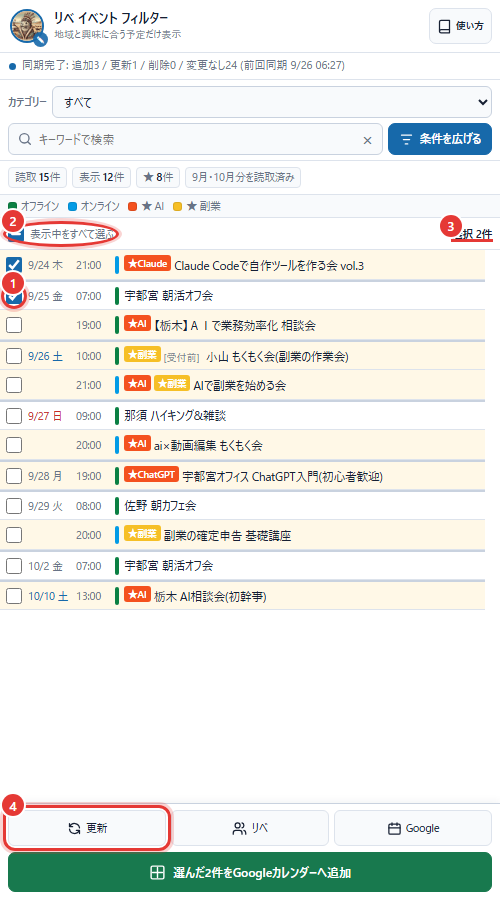
Googleカレンダーに入れる
選んだ予定を、押すだけで Googleカレンダーに入れます(v0.7.0 から)。何件選んでも1回押すだけです。入れ先は、このツールが作る専用のカレンダー「リベイベント絞り込み」です。
- 1予定にチェックを入れて、緑の「選んだ○件をGoogleカレンダーに入れる」を押す
- 2初めての時だけ、Google の画面が新しいタブで開く。自分のアカウントを選び、「許可」(または「続行」)を押す許可が済むとその画面は自動で閉じます。2回目からは、この手順はありません。
- 3パネルの下に「新規○ / 更新○ / 登録済み○」と出たら完了。Googleカレンダーが新しいタブで開くので、入ったか確かめる
- 入るのは、許可の画面で選んだご自身の Google アカウントです。使う人それぞれのカレンダーに、それぞれ「リベイベント絞り込み」が1つ作られます
- 同じ予定を2回押しても、2つにはなりません(「登録済み」と数えます)。リベシティ側で日時や題名が変わった予定は、押し直すと書き換わります
- 日時は日本時間で入ります(パソコンの時間帯の設定に左右されません)
- 説明欄に、開催の種類と場所・受付の状態・当たった興味の言葉・リベシティのイベントカレンダーのURLが入ります。題名の頭の ★ は、興味の言葉に当たった印です
- 色は一覧と同じ色で入ります。通知は「条件」→「Googleカレンダー」で、開始の何分前かを決められます(最初は60分前)
- 専用のカレンダーなので、Googleカレンダーの左の一覧でチェックを外すと、リベの予定だけまとめて隠せます
このツールが触れるのは、このツールが作った「リベイベント絞り込み」の中だけです。ふだんの予定や、ほかのカレンダーは見ることも書き換えることもできません(Google の許可がその範囲だけです)。
普段の使い方
一度設定した後は、毎回細かく操作する必要はありません。
- 一覧を見るだけなら、リベシティの右下の丸いボタンを押す(丸いボタンの数字は、条件に合う予定の数)
- 最新の一覧が欲しいときは「更新」を押す（条件の終了日の月まで読む）
- 必要な予定だけ入れるときは、検索してチェックし、緑のボタンを押す
- テーマで探すときは、いちばん上の「カテゴリー」を選ぶ
- よく使う条件は「条件を保存」しておくと、次から開くだけで同じ条件になる
一覧の見方
11/2 月13:00★AI栃木 AI相談会
チェックカレンダーに入れたい予定
日付開催日と曜日
時刻開始時刻
色の線種類または興味の言葉
★の札当たった興味の言葉
題名・状態イベント名と受付状況
題名が長いときは途中まで表示されます。行にマウスを重ねると、場所・終了時刻・状態などをまとめて確認できます。
色の決まり
迷ったときは、左にあるものほど優先と覚えてください。
1. ★興味の言葉の色AIなど、当たったグループの色
›
2. 種類の色オフライン・オンラインの色
›
3. 既定の色どちらも「なし」のとき
Googleカレンダーにも、一覧と同じ色で入ります。
引っ越し・やめ方
- Chrome 拡張版から乗り換える時: 決めた条件(地域・興味の言葉・除外する言葉など)は自動では移りません。お手数ですが、もう一度決めて「条件を保存」を押してください。拡張版はオフにするか削除してください(両方入っていても、先に動いた方だけが働きます)
- 別のパソコン: 条件はそのパソコンの Chrome の中(Tampermonkey の保存場所)だけに入っていて、外へは送りません。もう1台でも入れ方の①〜④をやって、条件を決め直します。スマホでは動きません
- やめる時: Tampermonkey のメニューで、このツールをオフにするか削除します
困ったとき
よくある原因と、最初に試すことをまとめました。
| 右下の丸いボタンが出ない | 入れ方の②「ユーザー スクリプトを許可する」がオンか確かめて、リベシティの画面でブラウザの更新ボタン(↻)を押してください。 |
|---|---|
| 一覧が0件のまま | リベシティにログインしているか確かめ、一覧の下の「更新」を押してください。それでも0件なら、条件の地域や興味の言葉を少し広げるか、上の切り替えを「読み取った全予定」にします。リベシティのイベントカレンダーを開くと、開いている月がそのまま一覧に入ります。 |
| 「更新」で裏のタブが開く | リベシティを見えない枠の中で読めなかった時は、裏でタブを開いて読み、読み終わったら自動で閉じます。そのままお待ちください。 |
| Google の許可の画面を閉じてしまった | もう一度、緑のボタンを押してください。許可の画面がまた開きます。 |
| 「リベイベント絞り込み」を消してしまった | そのまま緑のボタンを押せば、新しく作り直して入れます。別の Google アカウントに入れ直したい時は、「条件」→「Googleカレンダー」→「Googleとの接続を解除」を押してから、緑のボタンを押します。 |
| 🐒 のアイコンを押すと青い帯が出る | 「ユーザー スクリプトを許可する」がまだ、という合図です。帯を押すと設定が開くので、スイッチをオンにします。
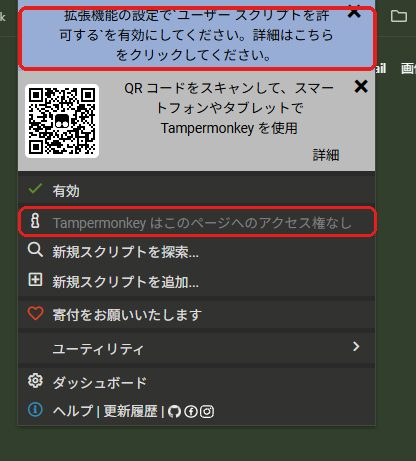 |
| 急に動かない・表示がおかしい | ① chrome://extensions を開き、右上の「デベロッパー モード」をオン → 左上の「更新」を押す ② リベシティに戻ってブラウザの更新ボタン(↻)を押す。
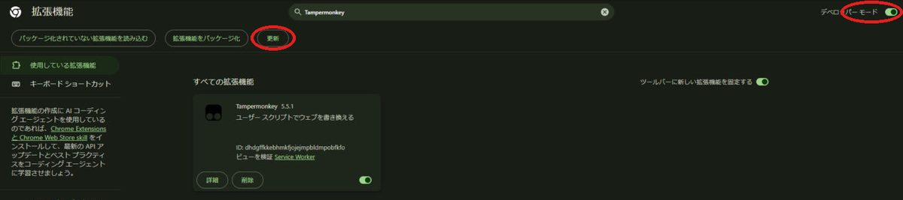 |
| 会社のパソコンでスイッチが押せない | 会社の管理者が Chrome の設定を決めていることがあります。「管理者によって管理されています」のような表示が出る時は、そのパソコンでは使えません。家のパソコンで使うか、会社の管理者に相談してください。 |
書き換える範囲
- リベシティのイベントカレンダーを読むだけで、リベシティには何も書き込まない
- Googleカレンダーは、このツールが作った「リベイベント絞り込み」の中だけを書き換える。ふだんの予定・ほかのカレンダーは見えないし触れない。予定を消すこともしない
- 条件・一覧・プロフィール画像は、そのパソコンの Chrome の中(Tampermonkey の保存場所)だけに置き、外へは送らない
- ログイン情報は預からない。Google の許可(1時間で切れる合鍵)は、そのパソコンの Tampermonkey の保存場所にだけ置き、Google 以外へは送らない